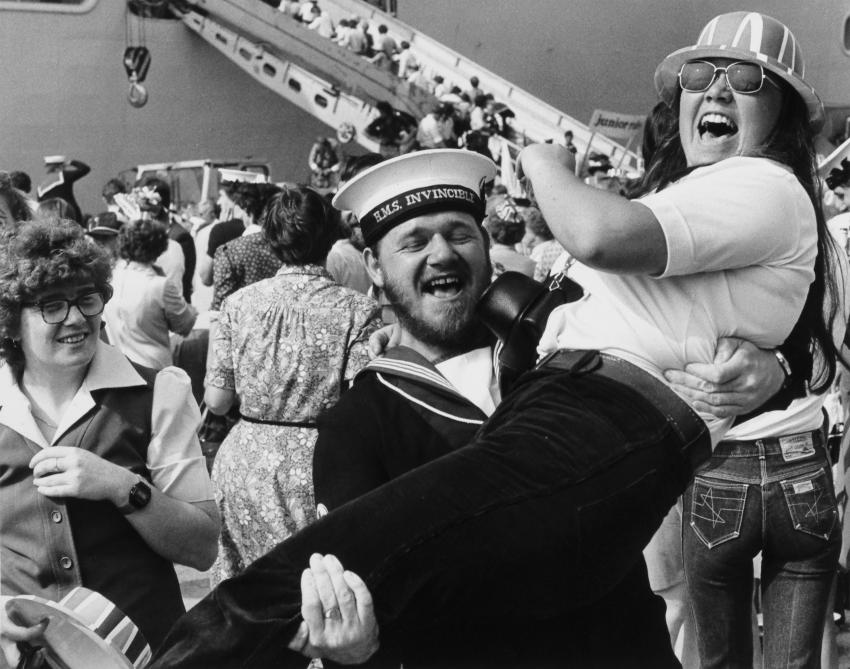
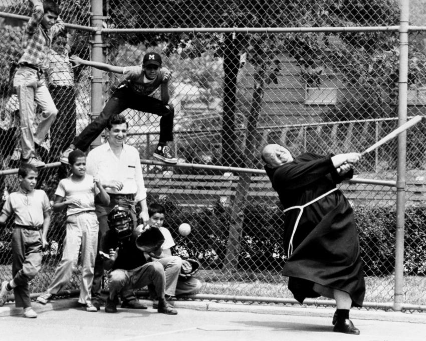
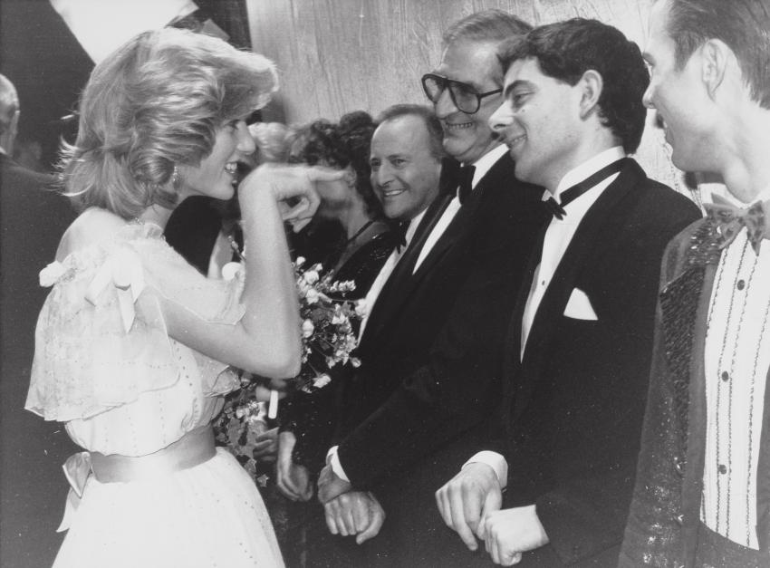
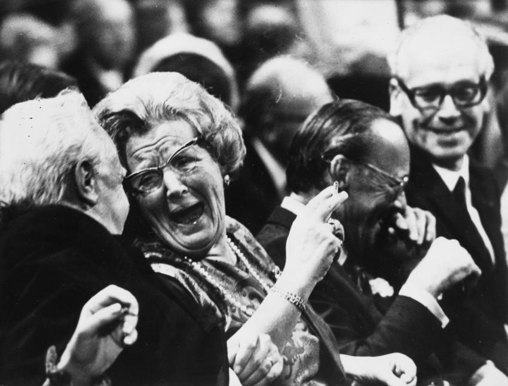

Welcome to CityInOut
The best place to get your urban culture update.
Photography
What our eyes captured lately
Spotlight
In 1974, a new category was introduced in the World Press Photo contest called happy news, intended for pictures of “events or people, illustrating positive or pleasant elements of life.”
In 1983, it became happy events and, in 1989, humor, until the category was eliminated in 1990. The new category was intended as a response to the often-heard comment that World Press Photo presented the world as a place of violence and suffering.

The category was especially popular with jury members and participants from communist countries, where bad news could not be shown, as it was not supposed to exist. Aad van den Heuvel, member of the 1983 World Press Photo Contest jury, described this dynamic aptly in his report: “Amidst the suffering and violence, the endearing category ‘Happy Events’ presents a somewhat absurd dissonant. But it also makes our Eastern-European friends and Chinese jury member finally excited. They judge every happy event intensively and full of dedication. They constantly ask for second ballots, and their joy is often enormous. At last, they do not need to make cumbersome political choices, and have no fear whether a particular choice may have political repercussions. One can’t go wrong with ‘Happy news’.”

The deliberations in 1983 resulted in awards for photos of Lech Walesa being reunited with his children after 11 months in prison, British soldiers returning home from the Falklands, and the christening of Prince William. Rather than happy news though, the awarded pictures in this category showed “people in happy, humorous and hilarious situations,” which indeed became the category’s definition from 1987 onwards. It is interesting to see what was considered humorous and hilarious at the time.

Anti-establishment
In the 1960s, when anti-establishment figures and groups became influential in Europe and the United States, and when both the ruling elite and the church came under pressure, quite some prize-winning images had shown clergymen in unexpected and sometimes awkward situations. An archbishop roaring with laughter, a priest playing baseball, and nuns drinking schnapps in a bar, were among those awarded at the time. In the 1970s, when the happy news category was established, this trend came to include members of the British Royal Family, political leaders—notably US Presidents Gerald Ford and Ronald Reagan—and other authority figures such as the police.

Other photos considered humorous showed ordinary people in extraordinary situations, or odd and unintentionally funny moments: a winking baby, a royal guard holding the Queen’s handbag, a lion tamer trying to scare a lion, and gravediggers sheltering below a coffin.

The 1990 World Press Photo Contest marked the end of the happy news & humor category. Not quite unexpectedly, as this contest included many pictures of the revolutions that swept over Central and Eastern Europe in 1989, which would lead to the fall of communism in nearly all countries in that region. The 1990 jury remarked in its report: “The humor category can be withdrawn. What had been created to add a more human aspect to World Press Photo is not necessary anymore. The category does not exist in photojournalism. This year’s winners, for example, could also have been awarded in people in the news, daily life and nature.”